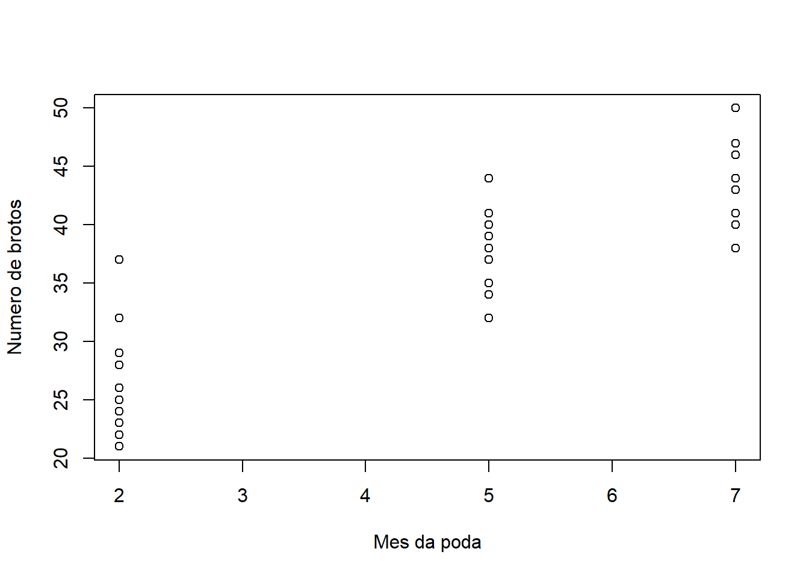
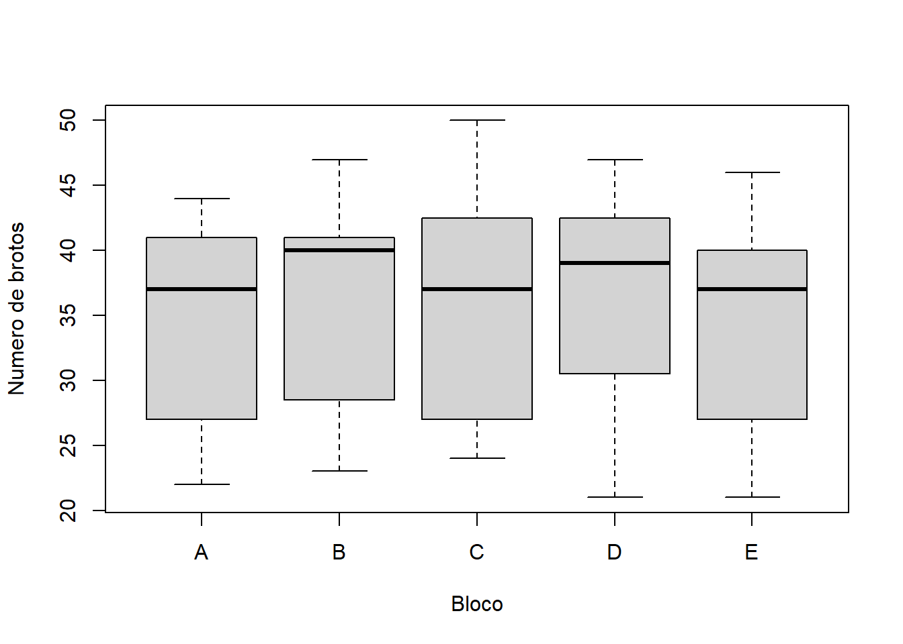

Cap. 5 Investigando os dados
O primeiro desejo ao receber os dados é partir para a análise estatística. Mas espere! Antes de partir para uma análise de variância e teste de médias, explore os dados através dos diferentes pacotes gráficos disponíveis no R. Neste livro serão apresentados dois tipos de gráficos disponíveis no pacote básico:
plotboxplot
Para quem busca opções avançadas para construção de gráficos sugerem-se os pacotes:
lattice: http://www.statmethods.net/advgraphs/trellis.htmlggplot2: http://docs.ggplot2.org/current/
5.1 Plot: Gráfico de dispersão
A função plot() é indicada para analisar duas variáveis quantitativas, já que uma assumirá o eixo x e outra o eixo y, sendo ambos os eixos numéricos e contínuos. Para exemplificar o uso das funções gráficas, será utilizado dados de um experimento sobre o aparecimento de brotos em função do mês em que a poda é realizada. Deseja-se encontrar em qual mês que a poda deve ser realizada visando minimizar o número de brotos.
| Irrigacao | IrrigacaoInt | MesPoda | Bloco | Brotos |
|---|---|---|---|---|
| 100 | Excesso | 2 | A | 22 |
| 100 | Excesso | 2 | B | 25 |
| 100 | Excesso | 2 | C | 26 |
| 100 | Excesso | 2 | D | 29 |
| 100 | Excesso | 2 | E | 28 |
| 75 | Alta | 2 | A | 22 |
| 75 | Alta | 2 | B | 23 |
| 75 | Alta | 2 | C | 25 |
| 75 | Alta | 2 | D | 25 |
| 75 | Alta | 2 | E | 21 |
| 50 | Media | 2 | A | 25 |
| 50 | Media | 2 | B | 24 |
| 50 | Media | 2 | C | 24 |
| 50 | Media | 2 | D | 21 |
| 50 | Media | 2 | E | 23 |
| 25 | Baixa | 2 | A | 25 |
| 25 | Baixa | 2 | B | 32 |
| 25 | Baixa | 2 | C | 25 |
| 25 | Baixa | 2 | D | 23 |
| 25 | Baixa | 2 | E | 25 |
| 0 | Ausencia | 2 | A | 29 |
| 0 | Ausencia | 2 | B | 23 |
| 0 | Ausencia | 2 | C | 28 |
| 0 | Ausencia | 2 | D | 37 |
| 0 | Ausencia | 2 | E | 26 |
| 100 | Excesso | 5 | A | 38 |
| 100 | Excesso | 5 | B | 40 |
| 100 | Excesso | 5 | C | 40 |
| 100 | Excesso | 5 | D | 40 |
| 100 | Excesso | 5 | E | 38 |
| 75 | Alta | 5 | A | 35 |
| 75 | Alta | 5 | B | 40 |
| 75 | Alta | 5 | C | 44 |
| 75 | Alta | 5 | D | 39 |
| 75 | Alta | 5 | E | 37 |
| 50 | Media | 5 | A | 37 |
| 50 | Media | 5 | B | 35 |
| 50 | Media | 5 | C | 37 |
| 50 | Media | 5 | D | 41 |
| 50 | Media | 5 | E | 34 |
| 25 | Baixa | 5 | A | 40 |
| 25 | Baixa | 5 | B | 35 |
| 25 | Baixa | 5 | C | 34 |
| 25 | Baixa | 5 | D | 40 |
| 25 | Baixa | 5 | E | 32 |
| 0 | Ausencia | 5 | A | 37 |
| 0 | Ausencia | 5 | B | 40 |
| 0 | Ausencia | 5 | C | 37 |
| 0 | Ausencia | 5 | D | 32 |
| 0 | Ausencia | 5 | E | 37 |
| 100 | Excesso | 7 | A | 44 |
| 100 | Excesso | 7 | B | 47 |
| 100 | Excesso | 7 | C | 47 |
| 100 | Excesso | 7 | D | 46 |
| 100 | Excesso | 7 | E | 46 |
| 75 | Alta | 7 | A | 43 |
| 75 | Alta | 7 | B | 47 |
| 75 | Alta | 7 | C | 50 |
| 75 | Alta | 7 | D | 44 |
| 75 | Alta | 7 | E | 44 |
| 50 | Media | 7 | A | 41 |
| 50 | Media | 7 | B | 41 |
| 50 | Media | 7 | C | 46 |
| 50 | Media | 7 | D | 47 |
| 50 | Media | 7 | E | 46 |
| 25 | Baixa | 7 | A | 44 |
| 25 | Baixa | 7 | B | 41 |
| 25 | Baixa | 7 | C | 41 |
| 25 | Baixa | 7 | D | 47 |
| 25 | Baixa | 7 | E | 40 |
| 0 | Ausencia | 7 | A | 41 |
| 0 | Ausencia | 7 | B | 43 |
| 0 | Ausencia | 7 | C | 40 |
| 0 | Ausencia | 7 | D | 38 |
| 0 | Ausencia | 7 | E | 40 |

A interpretação de um gráfico de dispersão é bastante intuitiva e direta. Em geral, no eixo X (horizontal) coloca-se a variável que espera-se influenciar de alguma maneira a variável que está no eixo Y (vertical). Dessa maneira, analisa-se o quanto a variável do eixo X está influenciando a variável do eixo Y.
No exemplo apresentado acima, a variável mês de poda influencia positivamente o número de brotos. Uma vez que quanto maior o mês de poda, maior é o número de brotos. Neste caso, observa-se uma relação diretamente proporcional.
5.2 Boxplot: Gráfico de caixas
A função boxplot() é indicada para analisar uma variável categórica e outra variável contínua. Situação ideal, por exemplo, para verificar a influência de tratamentos qualitativos sobre uma variável de interesse. Ou ainda, avaliar o efeito do bloco sobre a variável de interesse.
exp.grafico = read.csv("./data/Exemplo para Graficos.csv", sep = ",", dec = ".")
boxplot(data = exp.grafico, Brotos ~ Bloco,
xlab = "Bloco",
ylab = "Numero de brotos")
A interpretação do boxplot pode parecer complicada, já que este gráfico apresenta uma série de informações estatísticas em um único gráfico. Mas é justamente esta característica que o torna tão utilizado e tão importante.
A estrutura clássica do boxplot apresenta uma linha horizontal, dentro de uma caixa, sobreposta a uma linha vertical (do inglês whisker, também conhecida como bigode).
A linha horizontal no interior da caixa indica a mediana, ou o segundo quartil. Os limites da caixa indicam o primeiro e o terceiro quartil. Os fios do bigode (ou whiskers) indicam o máximo e o mínimo, excluindo outliers. A função boxplot assume como outlier dados que estão acima ou abaixo de 1.5 vezes a distância inter-quartil. Estes pontos considerados outlier serão marcados pontualmente no gráfico se estiverem presentes. No exemplo que apresentado acima, não houve a presença de outliers.
Lembre-se! O gráfico criado com a função boxplot() não remove os outliers, apenas exibe no gráfico. Assim, cabe a você a decisão de removê-los ou não.